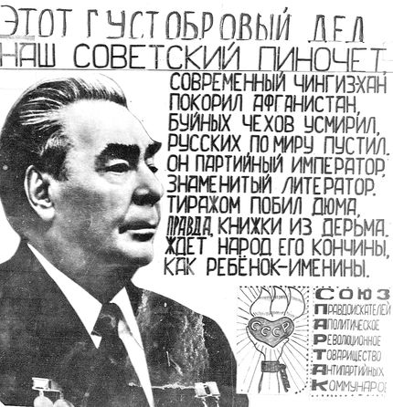

{kind=link}
Одной из главных проблем протестной оппозиции является полное отсутствие информации, на что живут её вожди. В советское время лидеры диссидентов тоже нигде не работали, но было хотя бы известно, из каких фондов оплачивалась их деятельность. Только один Солженицын имел капитал в банках на 8 млн. рублей.
Как уже не раз писал Блог Толкователя, зимний протест «креативного класса» выродился до шутихи: несколько десятков человек «оккупируют» то один газон, то другой. Да и то в Москве – регионы, которые зимой протестовали даже активнее, чем столица, заняты на садово-огородных работах. Сегодня, в это затишье, снова пришла пора спросить с вождей «белоленточной коалиции» – а на что они живут.
Это важно знать по нескольким причинам. Во-первых, и это главное, данные вожди на протяжении уже нескольких месяцев талдычат одну и ту же мантру про «жуликов и воров», про нечистоплотность власти. Следовательно, лидеры оппозиции должны быть на порядки честнее своих оппонентов. «Брал взятки Шувалов? А я не беру, и живу на одну зарплату (или пенсию родителей, или на выручку от своего магазинчика). Патриарх Кирилл отстроил дворец на черноморском побережье? А я живу в двухкомнатной хрущобе, с двумя детьми и кошкой. Рамзан Кадыров купил золотой «Хаммер»? А у меня «Жигули» десятилетней давности».
Во-вторых, это суживает возможность власти шантажировать вождей. Многие помнят историю, как «армянское радио» обнаружило магазин Навального на Рублёвке, в котором, якобы, из-под полы торговали водкой. Ладно, либерально-буржуазного лидера, как «своего», возможно, власть не тронет. В первый раз. А во второй скажет – «давай-ка, дружок, пиши расписку о сотрудничестве, а не то уедешь в лагерь за мошенничество и легализацию преступно нажитых средств».
В-третьих, такая открытость информации о доходах и расходах вождей оппозиции может привлечь к ним новые десятки тысяч сторонников, особенно русских европейцев, для которых важна абсолютная цивилизованность и чистоплотность лидера. Ну а если окажется, что лидер оппозиции не жирует, присосавшись к Трубе, за ним могут пойти и сотни тысяч автохтонов. Кто забыл – именно на таком пренебрежении к привилегиям, катаясь в трамвае и «Москвиче», в конце 1980-х сыграл будущий президент Ельцын.
Но до сих пор ни один из вождей «Белой ленты» не отчитался о своих доходах и расходах. Более того, неоднократные призывы сделать это, вызывают у них злобную реакцию (как это было в случае с Яшиным, который на полном серьёзе огрызался, что живёт на стипендию аспиранта и репетиторством). Но эти люди должны понять, что раз они пришли в политику, то должны быть готовы стать полностью «прозрачными, вплоть до мелких деталей личной жизни. Блог Толкователя предлагает лидерам «белоленточной» оппозиции вывесить свои декларации о доходах и расходах хоть на сайте той же «Доброй машины», или в свои аккаунтах в соцсетях, да хоть в нашем блоге (Блог Толкователя обязуется принять эти отчёты и вывесить их без всяких комментариев). Было бы очень правильно, если бы нашу инициативу поддержал низовой состав «бело-, красно-, зелёно- и прочих окрасов лент» оппозиции.
Ну а пока перейдём к рассказу о прошлом, о духовных отцах нынешней оппозиции – диссидентах брежневско-андроповского времени. Которые были не в пример своим духовным детям более открытыми в плане доходов-расходов.

(Проводы писателя Войновича в эмиграцию)
Но сначала напомним почти о полной схожести той политико-оппозиционной среды и нынешней. Вплоть до деталей. И это хороший урок молодым олухам, которые расточаются в медовых восторгах об уникальности той или иной инициативы или действий нынешней оппозиции. Как и сегодня, власть в те времена особенно страшила рабочая, левая оппозиция. Блог Толкователя уже писал, как при Хрущёве она была почти полностью уничтожена. «Диссиденты-интеллигенты приватизировали историю протестного движения в СССР. Но на самом деле в 1950-60-е годы эпицентр этой борьбы был в среде рабочего движения – на них приходилось абсолютное большинство из 3 тысяч протестных групп. Основное их требование – возврат к ленинской демократии. Некоторые совмещали это и с призывом дружить с США. Уничтожив их, власть породила в среде диссиды либерализм и фашизм (основанный в СССР грузинами)», – говорилось в той статье.
Т.е. концу 1960-х, как и сегодня, бразды правления в диссидентском движении захватили либералы и отчасти националисты (не только русские, но и западно-украинские, прибалтийские, крымско-татарские и пр.) – как и сегодня в «Белой ленте». Показательно, что по итогам протеста на Болотной 6 мая уголовные дела были возбуждены против анархистов, антифашистов. И ни одного либерала. Хорошо ещё, что левые создали кассу взаимпомощи, из которой помогают сидельцам.
Существовала такая Большая Касса и в советском диссидентском движении. В некоторые годы (особенно в конце 1970-х) в ней скапливалось до 1,5 млн. рублей. Если учесть, что тот, советский рубль, был в 100-120 раз весомее нынешнего, по современной выкладке это составляло бы более 150 млн. рублей (или 5 млн. долларов).
«Забот у Фонда было непомерно много, под его опеку попадали подследственные, отбывающие срок в тюрьмах, лагерях и ссылках, поднадзорные, узники психиатрических лечебниц и оставшиеся малолетние дети, престарелые родители всех этих категорий репрессированных.
{kind=link}
Нужно было составлять списки необходимых лекарств, добывать эти лекарства, хранить и доставлять тем, кому они предназначались. Те же хлопоты с продуктами для передач и посылок заключенным, для снабжения едущих на свидание родственников. Нужно было находить и оплачивать адвокатов, доставать билеты на поезда, самолеты и пароходы едущим на свидание. Особо важно было помогать зацепиться за жизнь тем, кто, отбыв срок заключения, освобождался и по приговору не имел права жить в больших городах. Как правило, нужно было кому-то сопровождать женщин, едущих на свидание с детьми, пожилых родителей. Фонд практиковал посылки к праздникам Рождества и Пасхи всем детям своих подопечных…
Постоянную помощь от Фонда получают около 3 тысяч бывших узников совести ГУЛАГа в России», – писал один из диссидентских лидеров Ходорович.
Из каких же средств складывался этот диссидентский Фонд? Как и сегодня, значительную часть составляли пожертвования с Запада (сейчас это называется «гранты»). Вот одна из росписей таких поступлений (пестрит идеологическими штампами, но и сегодня сводки агитпропа полны ими же – просто пропускайте мимо глаз):
«В распоряжении суда оказались «деловые» письма, касавшиеся финансирования подрывной работы в СССР. Эзоповским, точнее, конспиративным языком, и всё о деньгах. Вот письмо Великановой сообщнику в США М. от 29 октября 1979 года. Довольно склочного содержания. Речь идёт о способах пересылки денег в СССР для поддержания «дела», которым была занята Великанова, – подрывной работы. Письмо подлежало пересылке конспиративными каналами.
«И по почте письма, – пишет она, – ты уж если дела какие записывай себе куда-нибудь, чтобы не путать. А то в письме июльском (м. б., начало августа, даты нет) ты пишешь: «Звонил Григорий, спросил чтоб он поискал там у себя ещё открыток 12 штук. 2 отдай маме» (цитирую буквально) 15/VIII ты пишешь, что послал ей ко дню рождения подарок. «Если ты ей еще не передала два пакетика из семи (?!), то отдавая, скажи, что это те самые». A 27/VIII: «Рад, что тебе понравились открытки. Мне сегодня звонил Алик и мы решили послать сообща побольше 4 пачки по 32 штуки в каждой. Но тебе столько не нужно. Все не разошлешь, так что поделись с Арин и др.».
На первый взгляд безобидно – идёт разговор об «открытках», может быть, даже с живописными видами. На деле конспирация. «Потому я и взяла 1200 рублей, – продолжает Великанова. – Раньше я их не получала, так что твои слова: «Рад, что тебе понравились открытки» – не знаю, что обозначают. Сейчас я просила ещё 3200. Ну, а еще 3 раза по 3200 (4 пачки). Там, видимо, не будет. Там остаётся, кажется, еще 5-6 тысяч. И я думаю, что не надо пока больше торопиться. Это не уйдет. В фонде деньги есть. И все время ходят слухи о денежной реформе, так что мы боимся, что сов. деньги на книжках (тем более не на книжках) могут пропасть… А в дальнейшем разговор о деньгах давай вести проще. Напиши, чтоб я сделала Кольке от тебя подарок рублей на… Цифра пусть будет тоже на два порядка меньше и лучше круглая (пусть не круглая будет у тебя в долларах). И маме проси также сделать подарок на такую-то сумму. А я сложу эти цифры и прибавлю два нуля. А если в фонд – скажи, что посылаешь для меня и моих родственников посылку на такую-то сумму (цифра означает сов. деньги двумя порядками меньше). И скажи, какую часть посылки с Колей мы можем забрать себе. Ты нас обеспечил на год, наверное. (Чеки шли. Они, надеюсь, не пропадут с реформой и иногда бывают очень нужны…) Если бы ты мог достать Цветаеву! И книги по иглотерапии и массажу! Цветаева здесь на черном рынке стоит 120 рублей. Если бы удалось, присылай лучше с оказией».

Оставил свои записи о финансировании Западом советских диссидентов и Александр Исаевич Солженицын:
«Пока они, – пишет А. И. Солженицын, имея в виду налоговые службы СССР, – грабили только 35% денежных переводов – мы много слали официальными переводами (Алик Гинзбург для этого нашёл с десяток «получающих», не боящихся, и потом передающих другим). Другая успешная форма была: отъезжающие эмигранты оставляют Фонду в Союзе советские деньги, а на Западе Фонд им платит долларами по реальному курсу – доллар за три, потом четыре рубля.
А когда большевики ввели грабёж переводов уже в 65%, посылать деньги официально потеряло смысл. Но тут мы нашли изворотистую тайную форму. Хотя Советы объявляют дутый, официальный курс, значительно выше доллара, сами меняют иностранцам по-другому, – но наказывают подданных за всякий обмен рубля, иметь валюту может только государство. Советские же граждане, попадая на Запад, с радостью меняют советские ассигнации, сколько могут. И вот доброхотный, неоценимый наш друг, затем и член Правления Фонда В.С.Банкул, швейцарский гражданин, для начала прибегнув к помощи своего друга, русского армянина, живущего в Женеве, Сергея Нерсесовича Крикоряна, а затем сам наладив дело в Цюрихе, стал производить обмен обратный – за франки выкупал наши родные советские рубли – но исключительно отбирая трёпанные, затертые бумажки, а они среди хрустящих потекли не слишком быстро, и это одно задерживало размах нашего обмена: нельзя же посылать в СССР свеженькие, цельно-серийные (называлось это всё у нас – «операция Ы»).

(Суд над писателями Даниэлем и Синявским)
У самого Солженицына после отъезда из СССР в западных банках лежало по валютному курсу 8 млн. рублей (гонорары за его книги, изданные за границей). И тут надо отдать должное ему – он до падения советского режима регулярно выделял определённый процент от своих доходов. Даже в СССР перед отъездом на Запад Солженицын пожертвовал на борьбу с режимом 90 тысяч рублей. После, уже проживая в американском штате Вермонт, писатель выделял и бОльшие суммы (рекорд – в начале 1980-х единоразовый платёж в 270 тысяч рублей).
Как контраст – сегодня нет никаких данных, жертвуют ли кто-то из лидеров «белоленточной» оппозиции часть своих доходов на борьбу с режимом, а либерально настроенные писатели и художники – часть своих гонораров. Скорее всего нет.
Самые рьяные западные жертвователи вызывались даже лично привозить деньги советским диссидентам. Вот один из таких случаев – приезд в СССР немецкого гражданина Галкина Якова Мироновича, ранее – нацистского прислужника. Сухой отчёт по его делу:
«Галкин Яков Миронович, 1909 года рождения, уроженец села Красиловки Иванковского района Киевской области, русский, с образованием 3 класса, до 1941 года работал в Калужской области на строительстве железной дороги, затем был призван в Советскую Армию, участвовал в боях, был ранен, в 1943 году попал в плен к немцам и вступил во власовскую армию, в составе которой работал в Дании на строительстве оборонительных сооружений, после войны остался в ФРГ, где получал пенсию по инвалидности, с 1953 по 1966 гг. состоял членом «НТС, в 1965 г. вступил в «Комитет по культурным связям с соотечественниками за рубежом», проживал в г. Мюнхене, в СССР проживают его трое детей и другие родственники.
Осуждён 11 марта 1970 года Брестским областным судом по ст. 75 УК Белоруссии к 8 годам лишения свободы в ИТК общего режима с конфискацией валюты.
Галкин во время туристических поездок незаконно ввёз в СССР в июле 1966 года 3000 рублей и в октябре 1969 года 15000 рублей в советской валюте. 12 июня 1975 года он от дальнейшего отбывания наказания освобождён на основании ст. 2 Указа Президиума Верховного Совета СССР от 6 мая 1975 года «Об амнистии в связи с 30-летием победы советского народа в Великой Отечественной войне 1941-1945 гг.», как участник войны — старше 60 лет».

«Бабушка» оппозиции, Людмила Алексеева (ныне гражданка США), вспоминала, что для финансирования диссидентской деятельности применялись не только добровольные взносы несогласных, но и коммерческая деятельность. Она пишет об этой странице борьбы с режимом:
«В марте 1981 г. в г. Калинине произошел суд над 3 адвентистами, обвинявшимися в оборудовании подпольной типографии… В июне 1979 г. адвентистка Вера Кадук купила в Калинине дом за 18 тыс. рублей (на средства «секты», как пишет метная газета), и при помощи 25-летнего москвича Владимира Фоканова и 23-летнего жителя Днепропетровска Василия Ковальчука стала переоборудовать дом под типографию. Вот как описана в «Калининской правде» эта типография (которая хоть и не вступила в действие, видимо, была сделана по образцу действующих): «Замаскированный люк вёл с веранды дома в шахту размерами полтора на два метра и значительно выше человеческого роста. Из шахты был проделан лаз в тамбур из бетона, а уже из него вёл ход в комнату. Здесь была смонтирована система водяного отопления с двумя батареями и баком подогрева воды от электрообогревателя. К общей системе электроснабжения «бункер» подключался в обход счетчика… В доме был найден мощный электромотор. Кадук имела четыре пишущих машинки, гектограф и ротатор, большие запасы ротационной краски, писчей и копировальной бумаги, 35 упаковок ротационной пленки, другие средства для печатания. Кроме того, в трёх тайниках оказалось 16.433 рубля денег. Здесь же хранилось значительное количество нелегально изданной литературы секты адвентистов-реформистов – более 20 разных наименований».
В статье утверждается, что в обязанности В. Фоканова входило доставать стройматериалы, множительную технику, бумагу и пр. для нужд типографии, а В. Ковальчук был занят сбором денег с верующих на нужды типо графии. Этот фонд, как пишет газета, составляется из взносов верующих, каждый ежегодно отчислял для церкви десятую часть своих доходов (а Шелков якобы поднял этот взнос до пятой части доходов).
Вера Кадук получила двухлетний лагерный срок, Фоканов и Ковальчук – по 3 года лагеря».
А это описание Людмилой Алексеевой других поступлений в Фонд:
«Фонд составлялся из небольших ежемесячных взносов (от 1 до 5 рублей с человека). Деньги собирали по группам знакомых или сослуживцев и отдавали эти взносы – непосредственно или по установившейся цепочке – нескольким постепенно определившимся сборщикам. Такие сборщики были в писательской среде, в научно-исследовательских институтах, в вузах и т.д. Таким образом, собирались довольно значительные суммы, дополняемые нерегулярными, но более крупными пожертвованиями сочувствующих писателей, учёных, артистов и т.п. Были случаи передачи денег в помощь политзаключенным из наследства – не в официальном завещании, а через доверенных лиц.
Кроме помощи политзаключенным, с 1968 г. были случаи покупки домов для ссыльных на время ссылки. Позднее, с 1969 г., отдельно был создан фонд помощи детям политзаключенных. Этот фонд существовал на средства от домашних благотворительных концертов и т.п. пожертвований. Оба эти фонда – для самих политзэков и для их семей – то расширяясь, то сокращаясь, просуществовали до 1976 г., когда стал действовать основанный А. Солженицыным Русский фонд помощи политзаключенным, и средства стали поступать в основном из-за рубежа».
{kind=link}
(Грузинские евреи во время голодовки в здании Главпочтампа СССР, 1971 г.)
Верхушка диссидентов получала из этого Фонда обычно по 200-400 рублей в месяц, рядовой состав – по 100-150 рублей. Деньги небольшие, но тогда они были или на уровне, или выше средней зарплаты по стране. А главное – эти выплаты позволяли вести полноценную оппозиционную деятельность: ездить по стране, нормально питаться (много ли наработает голодный?), просвещаться.
При этом советский режим, по сравнению с нынешним, гораздо более строго отслеживал финансирование оппозиционной деятельности, и сажал (или отправлял в ссылку или психушки) наиболее активную часть диссидентов. Грозили неприятности и жертвователям, в основном экономического характера – их выгоняли из КПСС, лишали выгодных творческих контрактов, вычёркивали из очереди на квартиру и дачу.
Сегодня же финансирование оппозиционной деятельности – полностью легитимно. Что доказывает создание нескольких таких Фондов миноритарным акционером естественных монополий и совладельцем фабрики и магазинов Алексеем Навальным. Но куда дальше растекаются эти средства, на что живёт сам собиратель пожертвований – ответа нет. В общем, нынешней оппозиции ещё учиться и учиться у диссидентов советского времени.